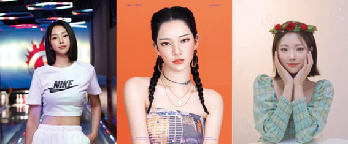
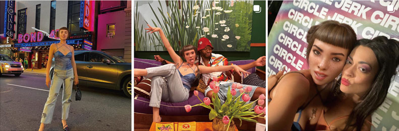
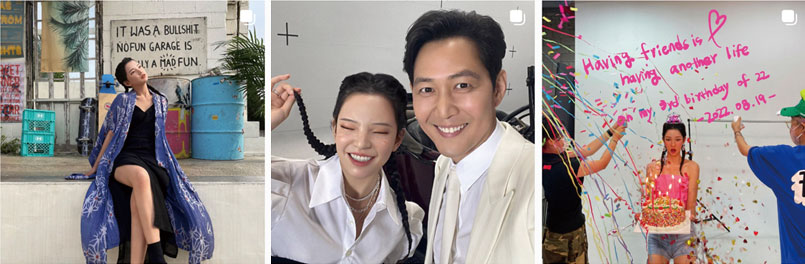
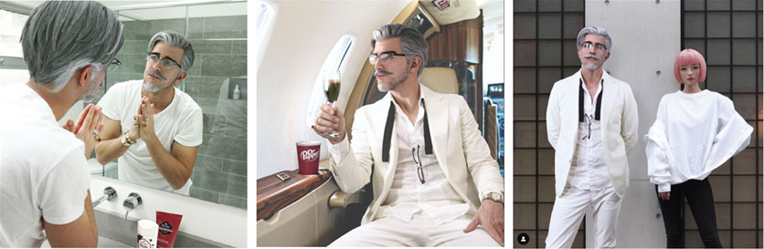
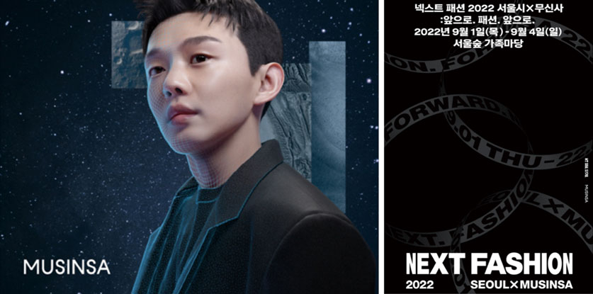
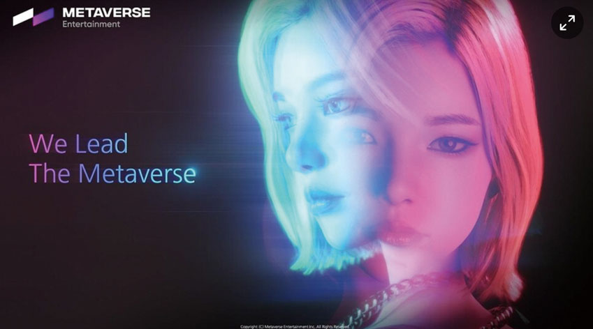
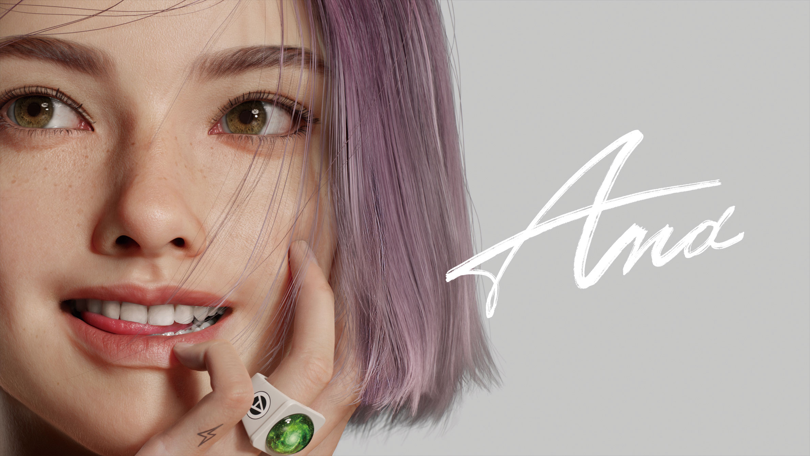
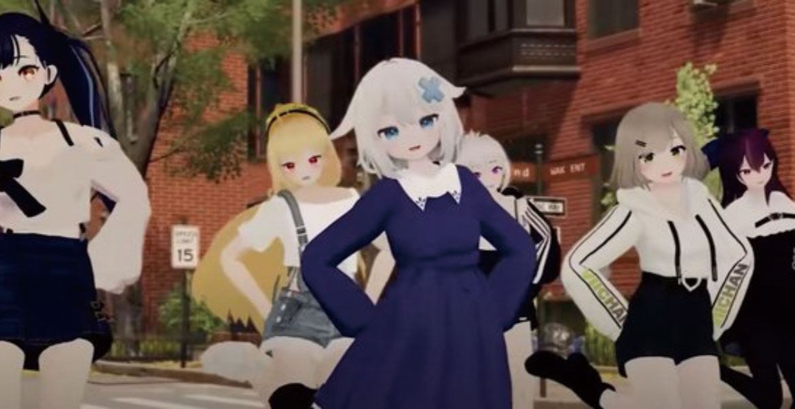

디지털 휴먼

Digital Human 국내외 미디어콘텐츠 산업 내 디지털 휴먼 활용 사례
강은진
(카카오엔터테인먼트 마케팅팀 리드)
-
코로나 19가 촉발한 이후, 비대면 온라인 활동이 업무나 대인관계 등 많은 부분을 차지하고 있다. SNS, 유튜브 등 온라인에서 콘텐츠를 즐기고, 친구와 대화하는 소셜 활동의 비중이 높아지며, 인공지능, 가상화폐 등 눈에보이지 않는 개념에 대해서도 받아들이는 한계치가 높아졌다. 그와 동시에 디지털 기술의 발달로, 버추얼 인플루언서와 사람의 구분이 어려울 정도가 되면서 디지털 휴먼이라는 개념도 낯설지 않게 받아들일 수 있게 되었으며 특히 디지털 세대라 불리는 MZ세대를 중심으로 점점 영향력이 확대되고 있다. 기술의 발전과 함께 디지털 휴먼의 영역이 점점 넓어지면서 시장이 앞으로 어떻게 성장할 수 있을지 많은 관심과 기대가 모아지고 있다.
-
1들어가며애나(ANA), 로지(Rozy), 리나(RINA), 한유아, 루이, 요즘 MZ 세대 사이에서 화제가 되고 있는 인플루언서들이다. 호감있는 외모, 노래와 춤은 기본이고 트렌디한 패션 감각까지 갖추고 있어 이들이 움직일 때마다 화제가 되며, 방송계, 광고계를 비롯 다양한 엔터테인먼트 영역에서 종횡무진 활약하고 있다. 이 중 리나는 2022년 3월 배우 송강호, 비의 소속사인 써브라임(SUBLIME) 아티스트 에이전시와 전속 계약을 맺어 화제가 되었다. 이들이 누구인지 왜 화제가 되고 있는지 알고 있는가?
그림 1화제의 버추얼 인플루언서그림 1 화제의 버추얼 인플루언서">출처: 왼쪽부터 리나 인스타그램(@rina.8k), 로지 인스타그램(@rozy.gram), 한유아 인스타그램(@_hanyua)
정답은 바로 버추얼 인플루언서(Virtual Influencer), 즉 디지털 휴먼(Digital Human)이기 때문이다.
디지털 휴먼은 디지털 기술이 만들어낸 인간으로 컴퓨터 그래픽(Computer Graphic)으로 만든 3D 인간 형상에 인공지능(AI) 알고리즘, 빅데이터분석, 자연어 처리 등 AI 기술을 입혀 인간이 하는 것은 다 따라하는 것은 물론이고 시공간 이동 등 신체적 물리적 조건으로 인간은 할 수 없는 행동도 할 수 있도록 만든 가상의 존재다.
시장조사 전문기관 이머전시 리서치(Emergency Research)는 전 세계 디지털 휴먼 관련 시장이 2020년 100억 달러(약 13조 원)에서 2030년에는 약 5,300억 달러(약 690조 원)로 증가할 것으로 예측했다. 디지털 휴먼은 메타버스, 교육, 금융, 쇼핑, 의료, 금융 등 다양한 산업에 활용되고 있다. 최근 소셜미디어와 게임, 엔터테인먼트 산업에서 급부상 중이다.
코로나 19가 촉발한 이후, 비대면 온라인 활동이 업무나 대인관계 등 많은 부분을 차지하고 있다. SNS, 유튜브 등 온라인에서 콘텐츠를 즐기고, 친구와 대화하는 소셜 활동의 비중이 높아지며, 인공지능, 가상화폐 등 눈에 보이지 않는 개념에 대해서도 받아들이는 한계치가 높아졌다. 디지털 기술의 발달로 버추얼 인플루언서와 실제 인물의 구분이 어려울 정도가 되면서 디지털 휴먼이라는 개념도 낯설지 않게 받아들일 수 있게 된 것이다. 특히 디지털 세대라 불리는 MZ세대를 중심으로 점점 영향력이 확대되고 있다.
이런 현상을 가능케 하는 디지털 휴먼 기술의 발전에는 게임 산업 기술 발전이 가장 큰 역할을 하고 있다. 게임 속 등장인물의 현실성을 높이기 위해 다양한 기술이 발전해왔는데, 최고의 게임 캐릭터를 만들기 위해 컴퓨터 그래픽과 정교해진 3D 기술로 진짜 인간과 구별할 수 없을 정도의 수준으로 인간의 모습을 만들어냈다. 또한 인공지능 기술을 적용해 시키는 대로 하는 로봇 같은 존재가 아니라 자신의 감정을 표정과 동작으로 나타낼 수 있는 인간 같은 존재로 구현해냈다.
실제로 인간처럼 정교하게 구현된 디지털 휴먼이 탄생하기 위해서는 다양한 AI 기술을 필요로 한다. 인간의 눈, 입, 귀, 두뇌를 보다 리얼하게 구현하기 위해서는 대화형 인공지능, 딥러닝, 기계 독해, 실시간 음성/영상 합성 등 전반에 걸쳐 고도화된 기술이 필수로 요구되며 이런 첨단 기술력을 보유한 다양한 기업들이 다양한 분야에서 기술을 발전시키고 한층 정교한 디지털 휴먼 생태계를 만들어가고 있다.
이런 기술의 발전에 따라, 점점 디지털 휴먼을 제작하거나 콘텐츠에 적용할 때 드는 비용이 낮아지고 있으며, 기존의 문제점과 한계점을 해결해 나가고 있다. 디지털 휴먼 영역은 기존에 없던 영역이기 때문에 어떤 새로운 산업 분야에도 연결될 수 있고. 이에 맞추어 인간이 각각 다양한 분야에서 활동하듯 디지털 휴먼도 다양한 분야의 활동들을 보여주고 있다.
-
2국내외 미디어 콘텐츠 산업 내 주요 기업의 디지털 휴먼 투자 동향
2.1.아바타와 AI 기술의 발전으로 새로이 탄생시킨 휴먼 IP의 등장
디지털 휴먼에 가장 적극적인 산업은 엔터테인먼트 산업이다. 사람과 디지털 휴먼의 차이 중 하나는 스토리다. 사람은 각자 다른 성격, 환경, 가치관을 가지고 살아온 시간들이 쌓여 각자 고유의 스토리를 가지게 된다. 사람과 다르게 만들어진 디지털 휴먼이, 공감을 얻을 수 있는 그들만의 스토리를 가진다면, 이는 강력한 IP파워를 가질 수 있게 되는 것이다. 엔터테인먼트 산업에서는 디지털 휴먼의 이러한 가능성을 보고 적극적인 투자를 하고 있다.
디지털 휴먼이 가장 먼저 진출한 분야가 바로 버추얼 인플루언서 영역이다. 인플루언서 시장은 국내뿐만 아니라 전 세계적으로 영향력 있는 마케팅 수단으로 자리잡고 있다. 미국의 시장조사 업체인 비지니스 인사이더 인텔리전스(Business Insider Intelligence)에 따르면, 기업이 인플루언서 마케팅에 사용하는 비용은 2019년 90억 달러(약 9조 원)에서 2022년 150억 달러(약 17조 원)로 2배 이상으로 늘어날 전망이다. 이 중에서 버추얼 인플루언서의 영역이 점점 성장하고 있다.
버추얼 인플루언서는 영원히 늙지 않으며, 항상 그대로이다. 최신 트렌드를 가장 빠르게 반영하면서도 각종 스캔들에서 자유롭고, 이는 광고주 입장에서 신뢰도에 큰 영향을 미친다. 특히 미디어의 발달로 SNS 를 통해 팬들과 실시간 소통이 가능한 점도 긍정적이고 팬들이 실제 모델과 소통하는 듯한 착각을 줄 수 있다.세계에서 가장 유명한 버추얼 인플루언서, 릴 미켈라(Lil Miquela)
2016년 인스타그램으로 데뷔한 릴 미켈라는 세계 최초의 버추얼 인플루언서이자 뮤지션으로 매우 상징적인 존재이다. 미국 로스앤젤레스(LA)에 거주하는 브라질계 미국인으로 설정된 릴 미켈라는 300만 명이 넘는 인스타그램 팔로워 300만을 보유하고 있는데 한해 수익이 130억 원이 넘는 것으로 알려진 대표 버추얼 인플루언서다. 2016년 첫 번째 디지털 싱글(Digital Single) ‘Not Mine’으로 뮤지션 활동을 시작했고 리믹스 포함 현재 디지털 싱글을 총 19개나 발매하며 꾸준히 활동을 이어가고 있다.
릴 미켈라는 미국 로봇 공학, 인공지능 및 미디어 비지니스에 대한 응용 프로그램을 전문으로 하는 미국 스타트업 ‘브러드(Brud)’가 만든 디지털 휴먼으로 브러드는 릴 미켈라 외에 ‘로니 블라코’, ‘버뮤다’ 까지 총 3명의 버추얼 인플루언서를 선보였다.그림 2버추얼 인플루언서, 릴 미켈라(Lil Miquela)그림 2 버추얼 인플루언서, 릴 미켈라(Lil Miquela)">출처: 릴 미켈라 / Lil Miquela / 사진 출처 릴 미켈라 공식 인스타그램 @ lilmiquela
2021년 브러드는 캐나다의 핀테크 유니콘 기업 데버랩스에 매각되었고, 수천억의 가치를 인정 받은 것으로 알려져 있다.
이케아의 모델, 이마(IIMA)
2020년 8월 이케아(IKEA)가 일본 도쿄에 매장을 내면서 디지털 휴먼 이마를 모델로 기용해 큰 화제가 되었다. 일본의 3D 이미징 스타트업 ‘AWW’가 2019년 선보인 디지털 휴먼인 이마는 분홍색 단발머리 소녀로 도쿄 하라주쿠에 위치한 이케아 전시장에서 3일 동안 먹고자며 요가와 청소를 하는 일상을 영상으로 만들어 유튜브에 공개했다
인간 모델로는 실제로 촬영을 실행하기 어려운 장면으로 디지털 휴먼의 가치를 가장 직접적으로 보여준 사례로 업계에 매우 인상 깊은 캠페인을 선보였다. 이마는 2019년 일본 패션지의 커버스타로 데뷔했다. 이를 계기로 이마는 포르쉐 등 다양한 브랜드의 광고 모델로 출연하며, 한해 7억이 넘는 수익을 냈다. 이마의 인스타그램 팔로워는 2022년 9월 현재 43만 명이 넘는다.
그림 3이케아의 모델, 이마(IIMA)그림 3 이케아의 모델, 이마(IIMA)">출처: 이마 공식 인스타그램 @imma.gram
국내 최초의 버추얼 인플루언서, 로지(Rozy)
로지(Rozy)는 2020년 12월 싸이더스 스튜디오엑스가 공개한 국내 최초 가상 인플루언서다. MZ세대(밀레니얼+Z세대)가 가장 선호하는 얼굴형을 모아 탄생한 22세의 젊고 발랄한 인물이며, 현재 2만 명이 넘는 인스타그램 팔로워를 보유하고 있다.
2020년 7월 보험회사인 신한라이브 광고로 데뷔했고, 22살의 나이로 설정되어 평생 22살에 머무르며 활동을 이어갈 로지는 모델, 배우, 가수로 열성 팬을 모으고 있다. 2021년 2월 22일 ‘후 엠 아이(Who am I)’라는 노래를 내놓은 데에 이어, 2021년 11월 발표한 뮤직비디오는 공개 3주 만에 1,000만 조회수를 기록하며 지속적인 화제성을 보여주었다. 광고 모델뿐만 아니라 티빙 오리지널 드라마 <내과 박원장>에 카메오로 출연해 연기자로서의 가능성을 보여주었고 넷플릭스 ‘오징어 게임’으로 세계에 이름을 알린 이정재와 함께 ‘2030 부산세계박람회’ 홍보대사로 발탁되는 등 다양한 행보를 보이고 있다.
그림 4국내 최초의 버추얼 인플루언서, 로지그림 4 국내 최초의 버추얼 인플루언서, 로지">출처: 로지 공식 인스타그램 @rozy.gram
2.2.휴먼 IP의 디지털 확장, 셀러브리티 AI 분야의 확장
기존 존재하는 휴먼 IP들은 강력하다. 아바타와 AI 기술의 발전으로 새로운 디지털 휴먼을 탄생시키는 것과 별개로, 시간과 장소의 제약을 받지 않고 활동할 수 있는 디지털 휴먼의 장점을 살려, 다양한 시도들이 진행되고 있는 가운데, 이미 유명한 휴먼 IP들이 새로이 해석되어 디지털 휴먼으로 전환되고 있다.
가상 인플루언서가 된 KFC 창업주 커널 샌더스
2019년 KFC는 창업주이자 브랜드 마스코트인 커널 샌더스를 컴퓨터 생성 이미지(CGI)로 재창조했다. KFC는 새로운 커널 샌더스의 모습을 인스타그램에 게시하고 ‘secret recipe for success(성공을 위한 비밀 레시피)’ 라는 해시태그를 삽입하여, 성공한 사업가의 모습으로 커널 샌더스를 재탄생시켰다. 젊고 잘생긴 미모로 재창조하여 Z세대의 취향을 저격했으며, 이 캠페인은 KFC SNS 계정의 팔로워를 약 100만 명까지 상승하는 데 기여했다.
그림 5KFC 공식 인스타그램에서 공개한 커널 샌더스그림 5 KFC 공식 인스타그램에서 공개한 커널 샌더스">
유아인이 아닌 무아인, 무신사의 디지털 휴먼 프로젝트
2022년 6월, 온라인 패션 플랫폼 무신사가 디지털 휴먼 무아인을 공개했다. 무아인은 무신사가 선보인 디지털 휴먼이다. 무신사의 광고 모델이었던 배우 유아인의 이름과 비슷한 네이밍과 함께 동반 출연한 광고로 인해 큰 주목을 받았다. 무신사는 무아인은 무신사의 새로운 브랜드 뮤즈로서 다양한 광고 캠페인에 등장할 예정이며 무신사가 앞으로 만들어 나갈 새로운 패션 세계관을 다양한 콘텐츠를 통해 선보일 계획이라고 말했다. 무아인은 디지털 휴먼으로서 시간과 공간에 구애받지 않고 자신만의 취향과 스타일에 따라 다양하게 변신하는 멀티페르소나를 선보일 예정이다.
가상과 현실의 경계를 넘어, 연령과 라이프스타일에 따라 변모하는 무아인을 통해 이제껏 보지 못한 새로운 패션 콘텐츠를 선보일 것으로 기대되었는데 무아인은 2022년 9월 1일 서울시와 함께 패션 페스티벌 ‘넥스트 패션 2022’에서 최초 런웨이 데뷔를 하며 현실 세계와 가상 세계를 연결하는 경험을 선사했다.
그림 6배우 유아인의 디지털 휴먼 무아인그림 6 배우 유아인의 디지털 휴먼 무아인">출처: 무신사 제공
김수현, 3D 가상인간이 되다.
배우 김수현이 가상 인간으로 다시 태어난다. 2021년 12월 엔터테인먼트 기업 골드메달리스트는 디지털 콘텐츠 전문 회사 이브이알 스튜디오와 함께 소속 배우 김수현을 가상 인간화 할 것이라고 밝다. 3D로 구현한 가상의 김수현을 다양한 디지털 콘텐츠에 활용해 새로운 부가가치를 창출할 계획이다. 김수현을 비롯한 골드메달리스트를 3D 스캔하여, 디지털 콘텐츠의 원천 IP를 확장한다는 계획을 가지고 있다.
초반 설정값을 지키면서 외형적 변화가 없는 기존의 디지털 휴먼과 달리, 김수현의 디지털 휴먼은 나이대별로 제작되어 이브이알스튜디오가 가진 극사실적 디지털 표현 기술을 바탕으로 피부와 근육, 음성 등 실제 인물의 신체적 변화를 반영하게 된다.
디지털 휴먼 제작을 맡은 이브이알 스튜디오는 할리우드 영화 시각 효과 디자이너를 비롯한 개발인력을 바탕으로 2016년부터 인공지능을 결합한 디지털 휴먼을 개발해온 전문 기업이다.
2.3.디지털 휴먼 실제 세상에 스며들다. 광고모델 넘어 앵커, 쇼호스트, 은행원까지
인플루언서나 모델의 영역 외에 실제 사람이 필요한 영역까지 디지털 휴먼의 영역이 확장되고 있다. 인플루언서나 모델과 같은 엔터테인먼트 영역 외에 좀더 고도화된 기술을 기반으로 실생활 속 다양한 분야에서 손쉽게 찾아볼 수 있다.
독보적인 대화형 AI 기술을 앞세운, 스켈터랩스
스켈터랩스는 인공지능의 딥러닝 기술을 기반으로 한 대화형 AI 기술을 더욱 고도화하여 최근 드라마 ‘이상한 변호사 우영우’ 열풍의 주인공 중 하나인 주현영 배우의 휴면 AI 챗봇 계획을 발표하면서 화제가 되었다. 주현영 배우의 휴먼 AI 챗봇은 셀럽, 콘텐츠, 음성합성기술, 자연어 처리(NLP) 등이 결합된 영상/음성 챗봇으로 주현영 배우의 외모와 말투를 닮았을 뿐 아니라 실시간 소통도 가능한 것이 특징이다. 이와 동시에 업무 지원, 고객 응대 등의 영역에 대화형 AI를 적용하고, 이를 시작으로 점차적으로 완벽한 음성과 자연어 처리가 탑재된 셀러브리티 AI를 계속해서 선보일 예정이다.
최근에는 데이터 분석 전문기업 더블유에이아이(WAI)와 금융권 AI 사업 컨설팅을 위한 MOU를 체결했다. 양사는 고도화된 인공지능 기술과 금융 분야 사업 노하우 및 데이터 역량을 바탕으로 ‘진짜 사람처럼 대화하는 인공지능 고객 상담원’을 개발하는 등 금융 업계에 최적화된 대화형 AI 서비스를 개발할 예정이다.
비대면 수업환경에서 활약하는 AI 강사 ‘라이언 로켓’
라이언 로켓은 인공지능으로 누구나 크리에이터가 될 수 있는 세상을 꿈꾸는 디지털 휴먼을 활용한 인공지능 영상 생성 스타트업으로 딥러닝 기반의 음성, 영상 합성 분야의 원천 기술을 보유하고 있는 기업이다. 국내외로 인정받은 디지털 휴먼 제작 기술을 통해 누구나 쉽게 사용할 수 있는 온에어스튜디오(onairstudio.ai) 서비스를 운영 중이다. 2020년 MBC 총선 개표 방송의 AI 캐스터, 이병헌, 한지민 배우의 목소리를 담은 문화재청 점자감각책 음성해설 등 뛰어난 인공지능 음성합성 기술력을 인정받아왔다.
최근 라이언 로켓은 평생 교육 전문 기업 휴넷과 AI 강사 솔루션 개발 사업 공동 추진을 위한 업무혐약을 체결했다. 이번 MOU를 통해서 라이언 로켓은 자체 AI 기술을 바탕으로 실제 사람처럼 자연스럽게 강의를 진행할 수 있는 휴넷 전속 AI 강사를 제작하게 됬다. 전속 AI 디지털 휴먼을 강사로 활용할 경우, 실존 인물에 대한 초상권이나 휴먼 리스크에 대한 부담 없이 완성도 높은 교육 영상 제작이 가능해질 것으로 기대된다.
사람의 감정을 AI 로 들여다보는 딥브레인 AI
딥브레인 AI 는 인공지능 영상 합성 전문 스타트업으로 딥러닝 기반의 영상 합성과 음성 합성 원천기술을 포함한, 대화형 인공지능에 대해 세계적은 기술력을 보유하고 있는 기업이다.
딥브레인 AI 는 국내 상조업계 1위 프리드라이프와 AI 추모 서비스인 ‘리메모리(Re:memory)’ 사업을 위한 업무협약 MOU를 체결했다. 딥브레인 AI 가 2022년 6월 출시한 ‘리메모리’ 서비스는 살아생전 건강한 모습의 본인, 부모님, 가족 등을 AI로 구현해 사후에도 언제든 생동감 있는 만남을 돕는 개인 고객 대상 AI 휴먼 서비스다.
2.4.영향력을 넘어 팬덤까지, 버추얼 아이돌
게임사와 VFX 스튜디오를 중심으로 버추얼 인플루언서를 비롯해 다양한 역할을 목표로 많은 디지털 휴먼이 등장하였다. 스마일 게이트와 시각특수효과(VFX) 전문업체 자이언트 스텝이 손잡고 개발한 디지털 휴먼인 한유아는 스마일게이트가 자체 개발한 VR 게임 ‘ 포커스온유’ 의 주인공으로 등장하였고, LG전자에서는 2021년 6월 11일 열린 IT 박람회 CES 온라인 콘퍼런스에서 가상 인간 ‘김래아’를 소개하며 아예 발표까지 맡겼다. LG전자는 최근 윤종신과 조규찬이 대표 프로듀서로 있는 연계 기획사인 미스틱스토리와 업무협약(MOU)을 맺으며, 김래아의 정식 가수로서의 데뷔를 알렸다. 또한 삼성도 조만간 가상 인간 ‘네온’을 업그레이드해 공개할 예정이다.
삼성전자는 작년 CES 2020에서 차세대 신기술 개발 조직 ‘스타랩스’를 통해 가상인간 플랫폼 ‘네온(NEON)’을 공개한 뒤 기업들이 이를 활용해 캐릭터를 제작, 제어할 수 있는 B2B 솔루션 ‘네온 프레임’, ‘네온 스튜디오’ 등을 출시했다.
디지털 휴먼을 향한 콘텐츠적, 기술적 많은 도전이 이루어지고 있지만, 디지털 휴먼은 아직까지 불쾌한 골짜기가 존재한다. 실제로 존재하지 않는 인물이기 때문에 대중의 인간적인 공감을 이끌어 내기엔 어려울 수 있고, 자칫 상업적인 목적으로만 비춰질 수 있는 가능성이 있기 때문이다. 이를 해결하기 위해 기술은 점점 발전하고 있고, 기업은 더욱 더 친화적인 가상인간을 만들어야할 과제가 남아있고, 이를 해결하기 위해 다양한 음악적 결합을 통해 사람들과 소통하고자 하는 버추얼 아이돌이 등장하고 있다.
카카오엔터테인먼트와 넷마블의 합작, 메타버스 엔터테인먼트의 디지털 휴먼
넷마블과 카카오는 2021년 10월 넷마블의 자회사 넷마블 FnC 가 주축이 되어 [메타버스 엔터테인먼트]를 설립하고, 가상 현실 플랫폼과 버추얼 아이돌 매니지먼트의 사업을 진행한다. 첫번째 사업으로 메타버스 엔터테인먼트에서 개발한 디지털 휴먼 리나는 지난 3월 이례적으로 연예기획사와 전속 계약을 체결했다. 이어서 K-pop 버추얼 아이돌 ‘4인조 걸그룹’의 데뷔까지 준비하고 있다. 전속 계약을 체결했다. 디지털 휴먼이 연예기획사에 소속된 일은 이례적이다. 이에 ‘4인조 걸그룹’이 K-pop 버추얼 아이돌로서 데뷔를 준비하고 있다.
그림 7메타버스 엔터테인먼트의 디지털 휴먼 리나 공개그림 7 메타버스 엔터테인먼트의 디지털 휴먼 리나 공개">출처: 메타버스 엔터테인먼트 제공
크래프톤이 만든 디지털 휴먼 애나(ANA)
2022년 9월, 배틀그라운드로 유명한 게임사 크래프톤에서 버추얼 휴먼 애나를 공개했다. 압도적인 퀄리티의 게임을 개발한 게임사의 장점을 극대화하여, 언리얼 엔진 기반 극사실주의 기술로 제작된 애나는 실제 사람 같은 사실적인 모습을 갖춘 것이 특징이다.
크래프톤은 음성 합성 등 딥러닝 기술을 적용해 애나만의 보이스를 구축하고 얼굴과 신체 전체에 리깅(Rigging) 기술을 적용해 다양한 관절의 움직임을 자연스럽게 구현, 비트감 가득한 음악에 맞춰 춤추는 애나의 모습을 구현했다. 애나의 신곡 뮤직비디오는 런칭 후 3일만에 300만 조회수를 기록하며 조금씩 팬들에게 스며들고 있다.
그림 8크래프톤이 발표한 디지털 휴먼 애나그림 8 크래프톤이 발표한 디지털 휴먼 애나">출처: Krafton 공식 홈페이지
생방송마다 팬들을 1만 명씩 몰고 다니는 버추얼 걸그룹, 이세계 아이돌
이세계 아이돌의 인기는 현실 아이돌과 견줄 만하다. 2021년 12월 발매한 ‘리와인드(Re;wind)’는 조회수 700 만 조회수를 기록했다. 이세계 아이돌은 트위치 스트리머 [우왁굳]이 기획한 프로젝트를 통해 만들어진 2D 애니메이션 기반의 6인조 버추얼 걸그룹이다. 전체 Full 3D가 아니기 때문에 멤버의 정체성은 ‘진짜 사람’이지만 아바타 뒤에 가려진 신상 정보는 비밀이다.
다만 이렇게 오히려 팬들에게 얼굴이 드러내지 않기 때문에 오히려 진짜 사람과 이세계 아이돌 멤버로서 구분되며, 진정성 있게 캐릭터의 매력을 더 살릴 수 있었다.
이렇듯 단순 실제 사람과 비슷한 디지털 휴먼이 아닌, 개성과 매력을 가진 다양한 컨셉의 디지털 휴먼이 등장하면서 각각의 스토리와 음악을 통해 새로운 시장과 팬덤을 만들어가고 있다.그림 9이세계 아이돌그림 9 이세계 아이돌">출처: 이세돌의 데뷔곡 ‘리와인드’ 유튜브 캡쳐
-
3마치며2022년 6월 20일, 인공지능(AI) 그래픽 전문기업 펄스나인은 자사의 가상인간 아이돌 ‘제인(Zaein)’이 지난 20일 아리랑라디오 ‘슈퍼 케이팝(Super K-pop)’ 생방송 보이는 라디오에 출연했다고 밝혔다. 해당 방송은 아리랑라디오 방송 채널과 유튜브 라이브를 통해 송출됐다. 제인은 사연과 채팅을 읽고 함께 안무를 하는 등 실시간으로 소통했다. 펄스나인은 생방송 진행을 위해 새롭게 ‘딥리얼 라이브(LIVE)’기술을 개발했다.
디지털 휴먼이 이제 단순히 사전 제작된 콘텐츠만으로 소통하는 시대에서 ‘실시간 소통’을 구현하기 위한 실험이 이어지고 있다. 2021년 6월 에이펀인터렉티브의 가상아이돌 ‘아뽀키(APOKI)’ 또한 유튜브를 통해 실시간 라이브방송을 진행한 바 있다.
그림 10펄스나인에서 선보인 걸그룹, 이터니티그림 10 펄스나인에서 선보인 걸그룹, 이터니티">출처: 스타데일리 뉴스 기사 http://www.stardailynews.co.kr/news/articleView.html?idxno=329518
다만 아뽀키는 언리얼 엔진에 에이펀의 실시간 렌더링, 실시간 모션캡처 기술이 접목돼 탄생한 3D 캐릭터로, 실제 사람과 같은 생동감과는 거리가 있었다. 실제로 유저들 반응도 신기하다라는 내용과 뒤에 사람이 있으니 완전한 디지털 휴먼이라고 보기 어렵다는 점 등 다양한 의견들이 있었다. 다만 여기서 주목해야할 것은 기존의 문제점, 한계점을 보완하는 기술이 나오고 있다는 사실이다.
현재까지 디지털 휴먼은 실제로 존재하지 않는 인물이기 때문에 대중의 인간적인 공감을 이끌어 내기엔 어려울 수 있고, 자칫 상업적인 목적으로만 비칠 수 있는 가능성이 있다는 것은 단점이다. 또한 지금까지는 쌍방향 소통이 없는 일방향 기반 콘텐츠 화보, 뮤직비디오 등 사전 제작 콘텐츠에만 등장했다. 실시간으로 입 모양, 표정, 각도 등에 변화를 줘야 하니 생방송에서 자연스러운 모습을 보여주기 어려워서다. 이런 한계를 극복하기 위해 실시간으로 표정, 제스처를 구현하는 기능이 지속해서 발전하고 있다.
대부분 제자리 근방에서 머물고 있는 사람들과 달리 기술은 항상 발전하고 있다. 특이점은 결국 온다. 그런 특이점을 수동적이 아닌 능동적으로 맞이하기 위한 다양한 엔터테인먼트 사업과 회사에서의 투자들이 진행되고 있다. 이제 더 이상 그래픽은 가상 세계구나 하고 티가 나는 시대가 아닌 완벽 현실보다 더 현실적인 기술을 선보이고 있으며 앞으로 더욱 발전해 나갈 것이다. 이에 디지털 휴먼들이 하나의 새로운 휴먼 IP로서 어떠한 가능성과 성장을 보여줄 수 있을지 앞으로가 더욱 기대된다.